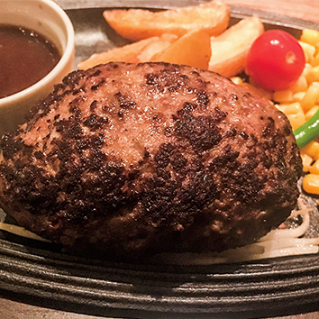

ハンバーグ専門店 ～ミートSATOU～
新型コロナウィルスの影響で『ソーシャル ディスタンス』を設けて現在は時短営業中だそうです。
盛岡情報駅より 徒歩5分にあります。
最高級黒毛和牛 精肉卸 ㈱佐藤ミート直営のステーキ・ハンバーグ専門店 ミートSATOUさんです。
最高級黒毛和牛の中から 熟練の職人の目で選び抜いたものだけを使用。
厳選素材のポテンシャルを最大限に生かした 黒毛和牛料理を提供して頂けます。
すごい行列で前方に20名ほど待ちの方がいました。
30分待って入店し、オーダーしたものは
【黒毛和牛100%ハンバーグ Single】¥1950
ライスは同一料金で 大、中、小から選択できます。
この日の黒毛和牛は埼玉県産で、焼き加減はこちらのオススメの ミディアムレアでお願いしました
ハンバーグは、鉄板の上でジュージューと食欲をそそる音を掻き鳴らしながら到着♪
ナイフを入れた瞬間に 肉汁が溢れだします♪
中は ピンク色の状態でまずは 何も付けずに頂くと...黒毛和牛の肉々しさが たまらん♪
牛骨や香味野菜などと3日間煮込まれたソースは優しい味わいながらコクもあり旨いっ!!
添えられている野菜達も レベルが高く特にじゃが芋！ 北海道産だけあって強烈な甘みです♪
人気店の味に 納得です！また機会があれば来店したいと思います！